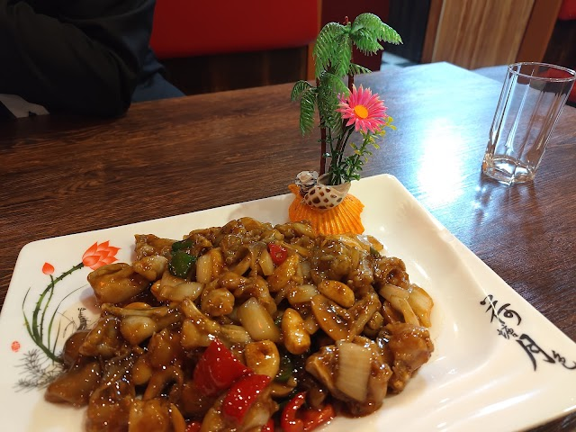
| 営業時間 | 月・火・水・木・金・土・日 11:00〜0:00 |
|---|---|
| 定休日 | なし(要最終確認) |
| 住所 | 埼玉県川口市西川口１丁目２５−３ 西川口ライオンズマンション山手 １Ｆ |
| 予約 | 可 — ☎ 048-229-0684 |
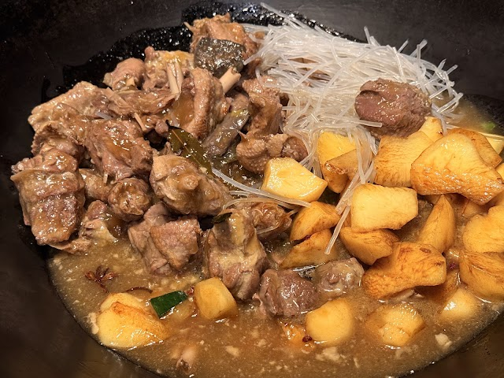
| 営業時間 | 月・火・水・木・金・土・日 11:30〜23:30 |
|---|---|
| 定休日 | なし(要最終確認) |
| 住所 | 埼玉県川口市西川口１丁目２４−２ 日神パレス西川口 B1 |
| 予約 | 可 — ☎ 048-258-8888 |
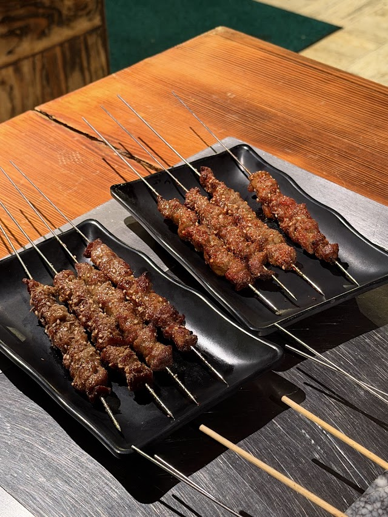
| 営業時間 | 月・火・水・木・金・土・日 11:00〜23:00 |
|---|---|
| 定休日 | なし(要最終確認) |
| 住所 | 埼玉県川口市西川口１丁目３−１１ |
| 予約 | 可 — ☎ 048-253-8666 ／ 公式サイト |
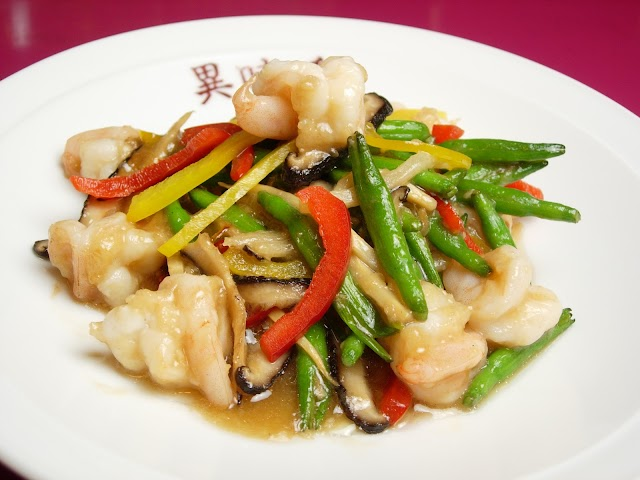
| 営業時間 | 火・水・木・金 15:00〜22:00 ／ 土・日 12:00〜22:00 |
|---|---|
| 定休日 | 月曜 |
| 住所 | 埼玉県川口市西川口１丁目２６−２４ 230ビル 1Ｆ |
| 予約 | 可 — ☎ 048-258-3256 ／ 公式サイト |
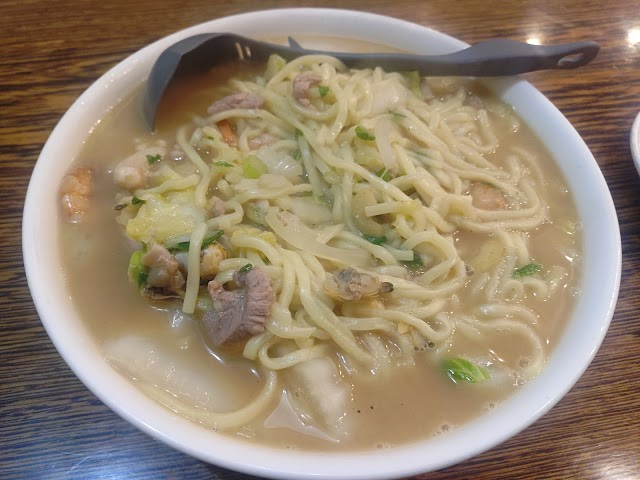
| 営業時間 | 火・水・木・金・土・日 10:00〜20:00 |
|---|---|
| 定休日 | 月曜 |
| 住所 | 埼玉県川口市西川口１丁目２２−１１ |
| 予約 | 可 — ☎ 048-452-8482 |
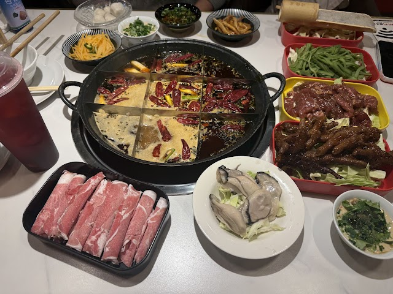
| 営業時間 | 月・火・水・木・金 17:00〜5:00 ／ 土・日 12:00〜5:00 |
|---|---|
| 定休日 | なし(要最終確認) |
| 住所 | 埼玉県川口市西川口１丁目５−２２ 地下一階 |
| 予約 | 可 — ☎ 050-5488-9187 ／ 公式サイト |
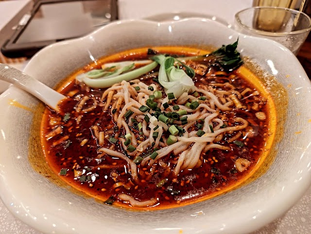
| 営業時間 | 月・火・水・木・金・土・日 24 :間営業 |
|---|---|
| 定休日 | なし(要最終確認) |
| 住所 | 埼玉県川口市西川口１丁目２３−３ REGIA 1F |
| 予約 | 可 |
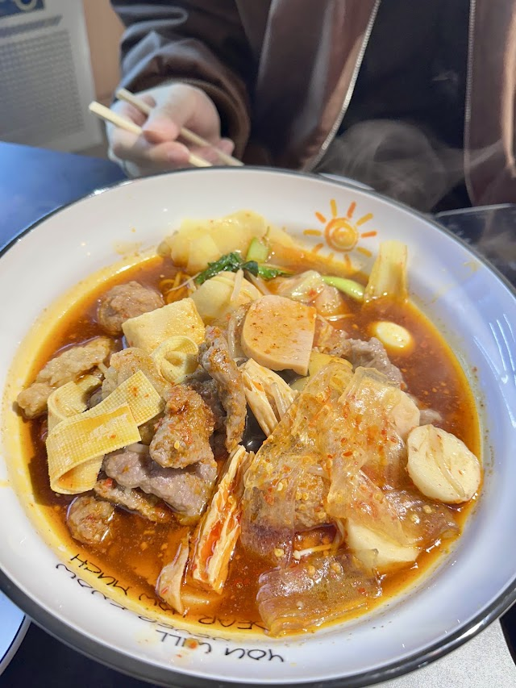
| 営業時間 | 17:00〜翌2:00 |
|---|---|
| 定休日 | 無休 |
| 住所 | 埼玉県川口市西川口１丁目２２−１ 仁治第二クイーンコーポ 105号、205号 |
| 予約 | 要確認 — ☎ 048-278-6577 |
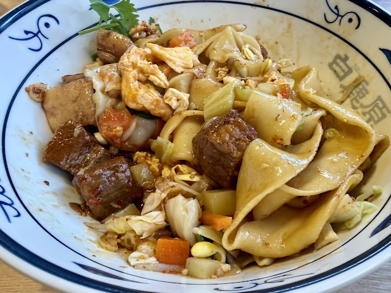
| 営業時間 | 月・火・水・木・金・土・日 11:00〜15:00, 17:00〜23:00 |
|---|---|
| 定休日 | なし(要最終確認) |
| 住所 | 埼玉県川口市西川口１丁目２３−７ |
| 予約 | 可 — ☎ 048-420-9543 |
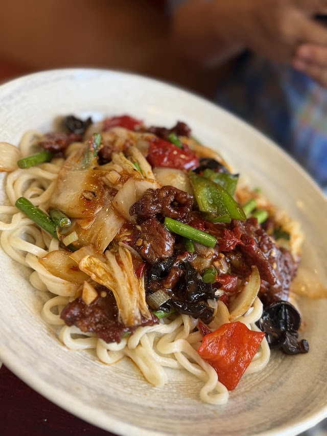
| 営業時間 | 月・火・水・木・金・土・日 11:00〜0:00 |
|---|---|
| 定休日 | なし(要最終確認) |
| 住所 | 1階, １丁目-２４-2 西川口 川口市 埼玉県 332-0021 日本 |
| 予約 | 可 — ☎ 048-203-9357 ／ 公式サイト |
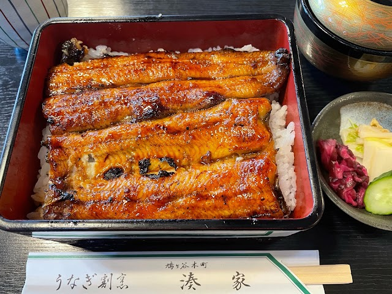
| 営業時間 | 月・水・木・金・土・日 11:00〜14:00, 17:00〜21:00 |
|---|---|
| 定休日 | 火曜 |
| 住所 | 埼玉県川口市鳩ヶ谷本町１丁目１−１２ |
| 予約 | 可 — ☎ 048-281-2349 ／ 公式サイト |
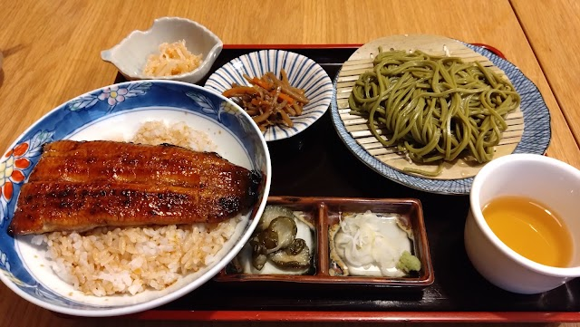
| 営業時間 | 月・木・金・土・日 11:00〜14:00, 17:00〜20:30 ／ 水 11:00〜20:30 |
|---|---|
| 定休日 | 火曜 |
| 住所 | 埼玉県川口市鳩ヶ谷本町１丁目３−１３ |
| 予約 | 可 — ☎ 048-281-3004 |
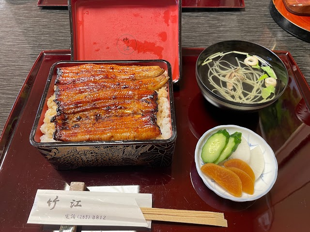
| 営業時間 | 水・木・金・土・日 11:30〜14:00, 17:00〜20:00 |
|---|---|
| 定休日 | 月・火曜 |
| 住所 | 埼玉県川口市桜町１丁目５−３ |
| 予約 | 可 — ☎ 048-283-8812 ／ 公式サイト |
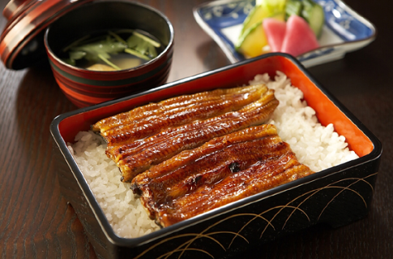
| 営業時間 | 火・水・木・金 11:30〜15:00, 16:30〜21:00 ／ 土・日 11:30〜15:00, 16:30〜20:30 |
|---|---|
| 定休日 | 月曜 |
| 住所 | 埼玉県川口市栄町３丁目３−１０ |
| 予約 | 可 — ☎ 050-5462-7069 ／ 公式サイト |
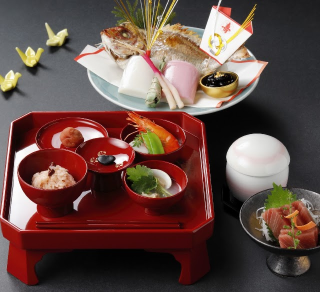
| 営業時間 | 火・水・木・金・土・日 11:30〜22:00 |
|---|---|
| 定休日 | 月曜 |
| 住所 | 埼玉県川口市栄町２丁目１−２６ 神谷マンション 1F |
| 予約 | 可 — ☎ 048-256-5551 ／ 公式サイト |
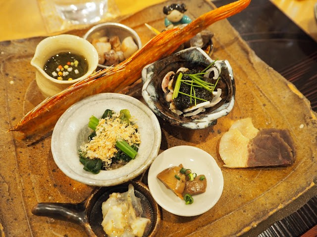
| 営業時間 | 月・火・水・木・金・土 12:00〜14:00, 17:00〜22:00 |
|---|---|
| 定休日 | 日曜 |
| 住所 | 埼玉県川口市中青木１丁目５−５ キャニオンマンション １F |
| 予約 | 可 — ☎ 048-271-9520 ／ 公式サイト |
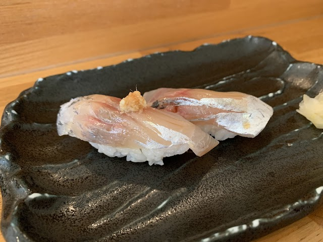
| 営業時間 | 月・火・水・木・金・土 12:00〜13:30, 18:00〜22:00 |
|---|---|
| 定休日 | 日曜 |
| 住所 | 埼玉県川口市並木３丁目３４−２３ 百日鬼ビル |
| 予約 | 可 — ☎ 048-251-0136 |
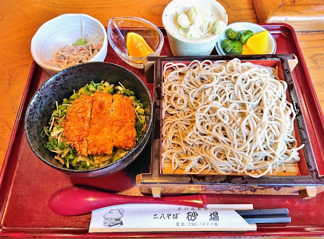
| 営業時間 | 月・水・木 11:00〜14:45 ／ 金・土 11:00〜14:45, 17:00〜19:30 ／ 日 11:00〜19:30 |
|---|---|
| 定休日 | 火曜 |
| 住所 | 埼玉県川口市安行西立野２９４−４ |
| 予約 | 要確認 — ☎ 048-296-1933 ／ 公式サイト |
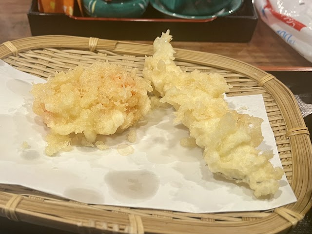
| 営業時間 | 火・水・木・金・土 11:30〜13:30, 17:30〜22:30 ／ 日 11:30〜14:00, 17:30〜22:00 |
|---|---|
| 定休日 | 月曜 |
| 住所 | 埼玉県川口市東領家３丁目３−１７ |
| 予約 | 可 — ☎ 048-223-5630 |
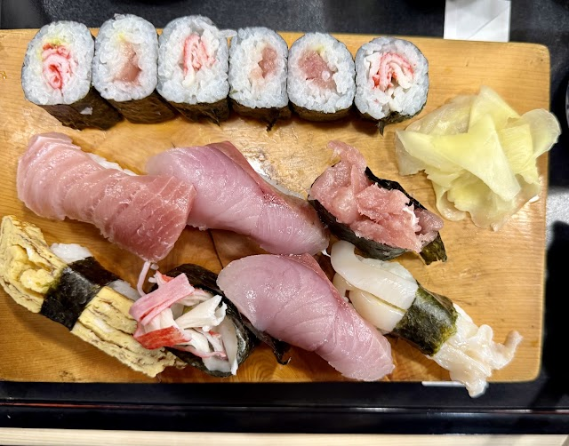
| 営業時間 | 月・火・木・金・土・日 11:30〜14:00, 17:00〜21:00 ／ 水 17:00〜21:30 |
|---|---|
| 定休日 | なし(要最終確認) |
| 住所 | 埼玉県川口市安行原２３０５ セオリー |
| 予約 | 可 — ☎ 048-295-3422 ／ 公式サイト |
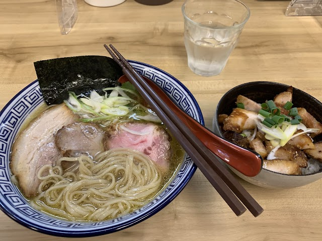
| 営業時間 | 火・水・金 11:00〜14:30, 18:00〜21:00 ／ 木・土・日 11:00〜15:00 |
|---|---|
| 定休日 | 月曜 |
| 住所 | 埼玉県川口市西川口１丁目８−５ |
| 予約 | 要確認 — ☎ 048-255-2251 ／ 公式サイト |
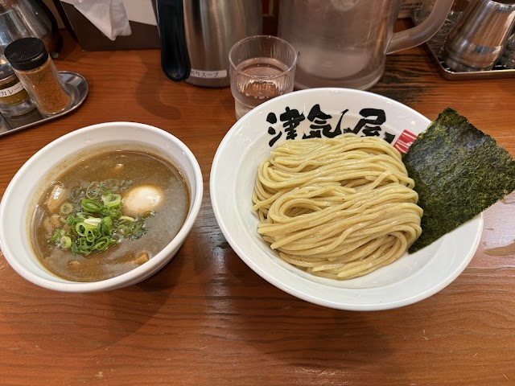
| 営業時間 | 月・火・水・木・金・土・日 11:00〜1:00 |
|---|---|
| 定休日 | なし(要最終確認) |
| 住所 | 埼玉県川口市並木３丁目１０−１３ |
| 予約 | 要確認 — ☎ 048-229-6856 ／ 公式サイト |
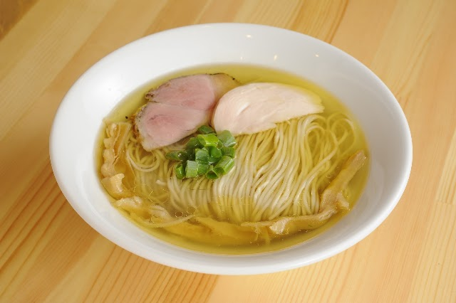
| 営業時間 | 月・火・水・木・金・土・日 11:00〜21:45 |
|---|---|
| 定休日 | なし(要最終確認) |
| 住所 | 埼玉県川口市栄町３丁目５−１５ |
| 予約 | 要確認 — ☎ 048-299-9942 ／ 公式サイト |
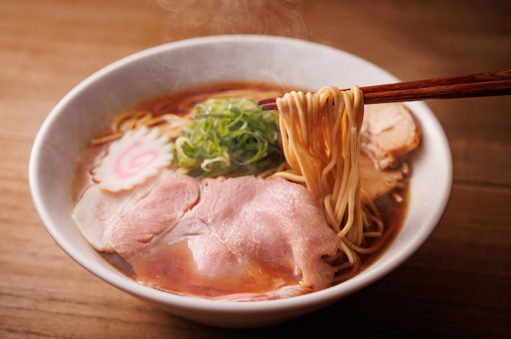
| 営業時間 | 月・火・水・木・金 11:00〜14:30, 17:00〜20:30 ／ 土・日 11:00〜20:30 |
|---|---|
| 定休日 | なし(要最終確認) |
| 住所 | 埼玉県川口市幸町２丁目８−２７ |
| 予約 | 要確認 — ☎ 048-229-6672 |
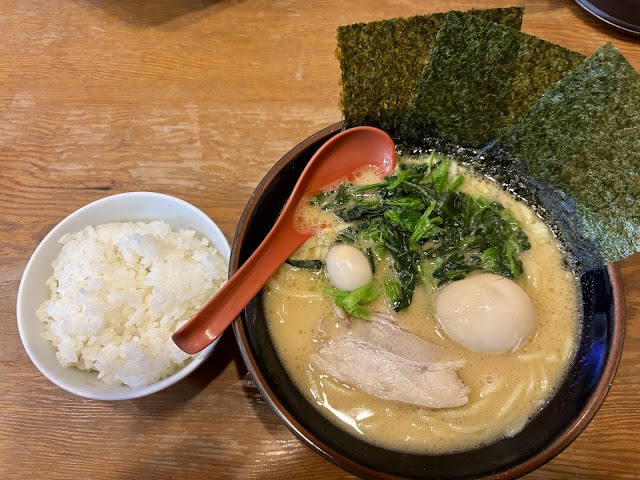
| 営業時間 | 月 11:30〜14:00, 17:30〜20:30 ／ 火・水・金 11:30〜14:00, 17:30〜22:00 ／ 土・日 11:00〜22:00 |
|---|---|
| 定休日 | 木曜 |
| 住所 | 埼玉県川口市幸町３丁目８−５ １F |
| 予約 | 要確認 — ☎ 048-257-4922 |
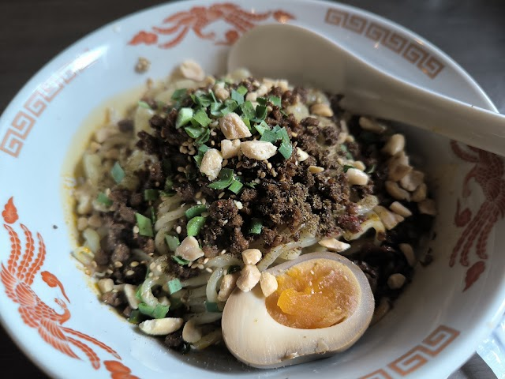
| 営業時間 | 火・水・木・金・土 11:30〜15:00, 18:00〜23:00 ／ 日 11:30〜15:00, 18:00〜22:00 |
|---|---|
| 定休日 | 月曜 |
| 住所 | 埼玉県川口市西川口１丁目５−５ ＭＦハイツ 1F |
| 予約 | 要確認 — ☎ 048-211-0281 ／ 公式サイト |
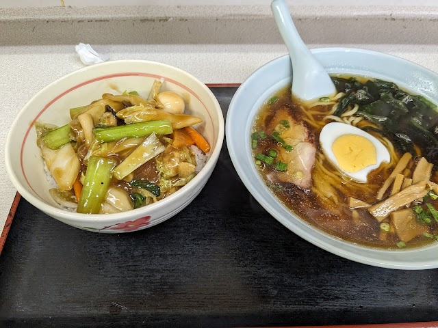
| 営業時間 | 月・火・水・金・土・日 10:30〜15:00, 17:00〜22:00 |
|---|---|
| 定休日 | 木曜 |
| 住所 | 埼玉県川口市並木３丁目６−１１ |
| 予約 | 可 — ☎ 048-253-7013 |
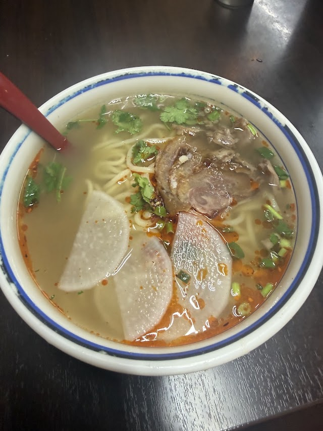
| 営業時間 | 月・火・水・木・金・土・日 11:00〜23:30 |
|---|---|
| 定休日 | なし(要最終確認) |
| 住所 | 埼玉県川口市並木３丁目１２−３ 大鵬ビレッジ ザ・テラス 1F |
| 予約 | 可 — ☎ 048-291-8385 |
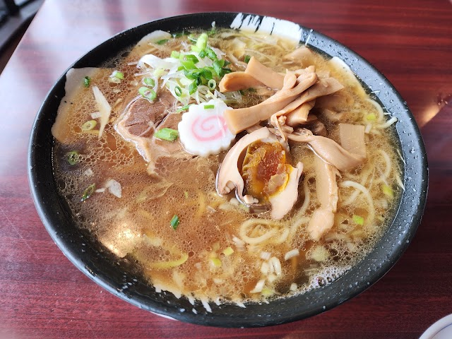
| 営業時間 | 月・水・金・土・日 11:30〜14:00, 17:30〜21:00 ／ 木 11:30〜14:00 |
|---|---|
| 定休日 | 火曜 |
| 住所 | 埼玉県川口市弥平２丁目２３−１１ |
| 予約 | 可 — ☎ 080-7579-1717 ／ 公式サイト |
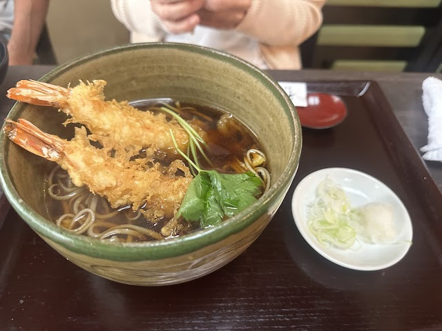
| 営業時間 | 月・水・木・金・土・日 11:00〜15:00, 17:00〜20:30 |
|---|---|
| 定休日 | 火曜 |
| 住所 | 埼玉県川口市榛松２４６ |
| 予約 | 可 — ☎ 048-281-2371 |
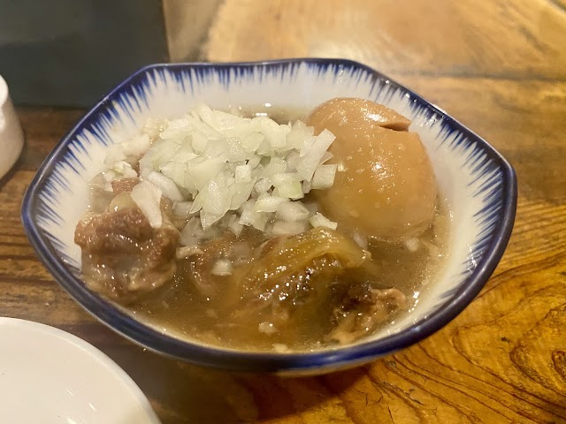
| 営業時間 | 火・水・木・金 16:00〜22:30 ／ 土・日 15:00〜22:30 |
|---|---|
| 定休日 | 月曜 |
| 住所 | 埼玉県川口市栄町２丁目５−１１ |
| 予約 | 可 — ☎ 048-299-7705 ／ 公式サイト |
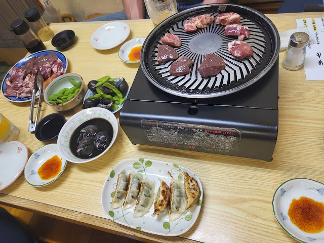
| 営業時間 | 月・火・水・金・土・日 17:00〜23:00 |
|---|---|
| 定休日 | 木曜 |
| 住所 | 埼玉県川口市三ツ和１丁目29−５ |
| 予約 | 可 — ☎ 048-283-8350 |
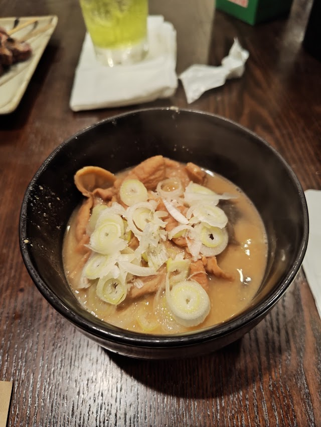
| 営業時間 | 17:30〜24:00 |
|---|---|
| 定休日 | 水曜 |
| 住所 | 埼玉県川口市北園町４７−１９ |
| 予約 | 可 — ☎ 048-268-3730 |
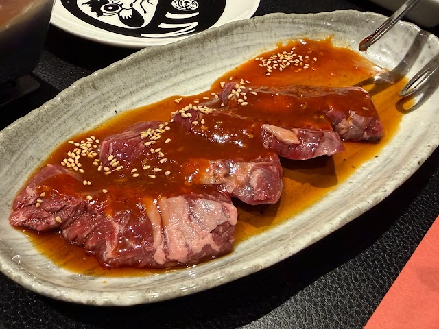
| 営業時間 | 月 17:00〜22:00 ／ 火・木・日 11:30〜14:00, 17:00〜22:00 ／ 金・土 11:30〜14:00, 17:00〜22:30 |
|---|---|
| 定休日 | 水曜 |
| 住所 | 埼玉県川口市栄町３丁目２−２１ キャニオンマンション 2F |
| 予約 | 可 — ☎ 048-229-8414 ／ 公式サイト |
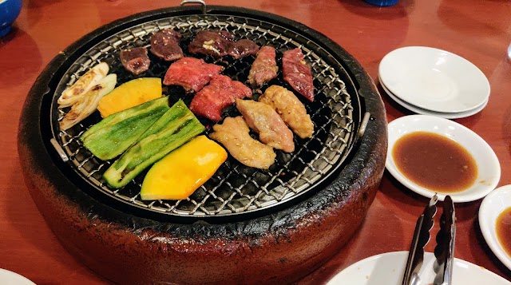
| 営業時間 | 月・火・木・金・土・日 17:00〜23:00 |
|---|---|
| 定休日 | 水曜 |
| 住所 | 埼玉県川口市里１０３３−１ |
| 予約 | 可 — ☎ 048-284-9875 |
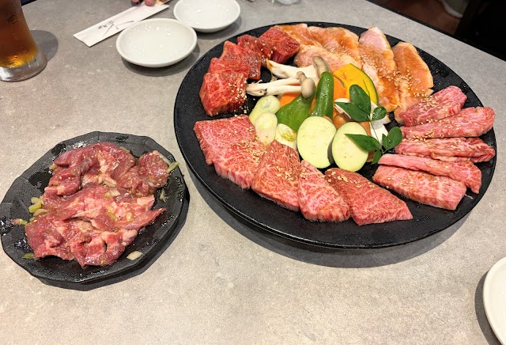
| 営業時間 | 月・水・木・金・土・日 17:00〜22:15 |
|---|---|
| 定休日 | 火曜 |
| 住所 | 埼玉県川口市飯塚２丁目６−６ |
| 予約 | 可 — ☎ 048-258-2829 |
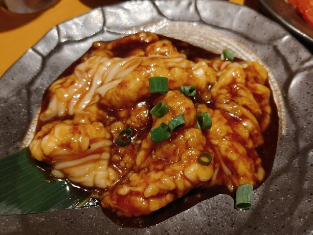
| 営業時間 | 火・水・木・金 16:30〜21:30 ／ 土・日 11:30〜14:30, 16:30〜21:30 |
|---|---|
| 定休日 | 月曜 |
| 住所 | 埼玉県川口市東川口２丁目３−６ グローバルビル 1F |
| 予約 | 可 — ☎ 048-294-0966 ／ 公式サイト |
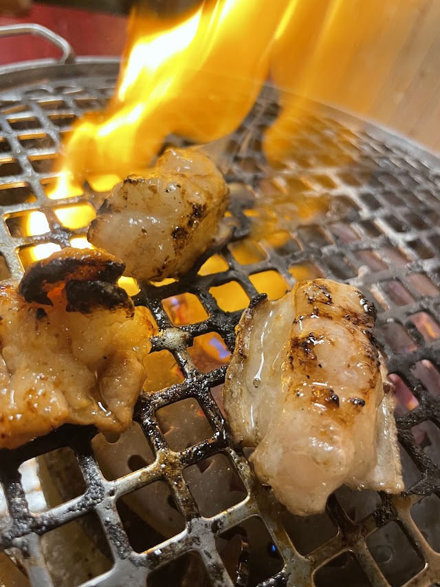
| 営業時間 | 月〜金・祝前日15:00〜24:00、土日祝12:00〜24:00(L.O.23:00) |
|---|---|
| 定休日 | 火曜(祝日の場合は営業) |
| 住所 | 埼玉県川口市並木３丁目３−２１ |
| 予約 | 可 — ☎ 048-291-9524 ／ 公式サイト |
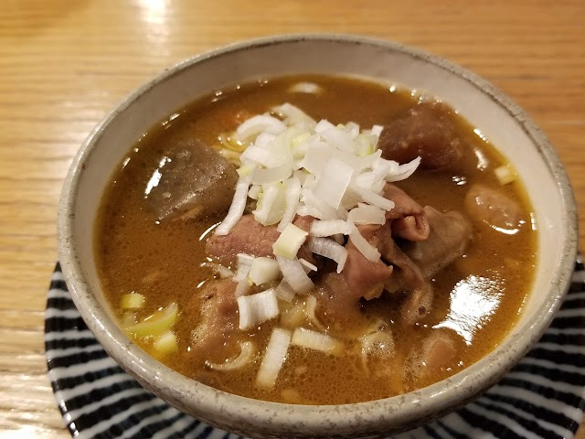
| 営業時間 | 月・火・水・木・金 15:00〜23:00 ／ 土 13:00〜23:00 ／ 日 13:00〜21:00 |
|---|---|
| 定休日 | なし(要最終確認) |
| 住所 | 埼玉県川口市幸町２丁目２−２３ |
| 予約 | 可 — ☎ 048-256-1010 ／ 公式サイト |
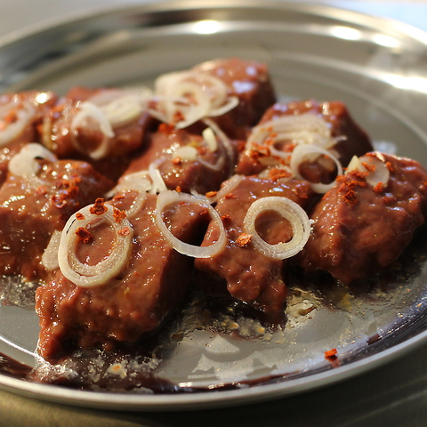
| 営業時間 | 火・水・木・金・土・日 12:00〜15:00, 17:00〜23:00 |
|---|---|
| 定休日 | 月曜 |
| 住所 | 埼玉県川口市川口５丁目１−１１ |
| 予約 | 可 — ☎ 048-212-5388 ／ 公式サイト |
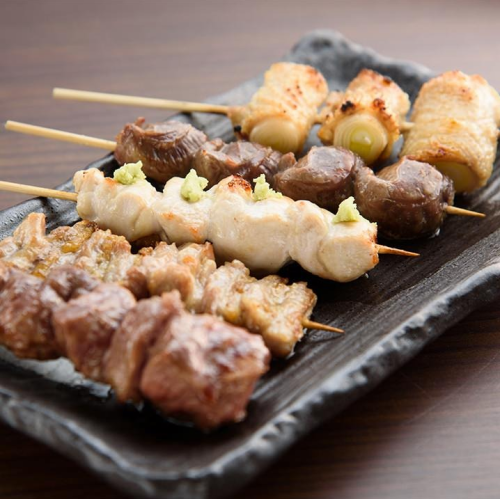
| 営業時間 | 月・火・水・木・金・日 16:00〜0:00 ／ 土 15:00〜0:00 |
|---|---|
| 定休日 | なし(要最終確認) |
| 住所 | 埼玉県川口市東川口２丁目３−１ ハイエスト 1F |
| 予約 | 可 — ☎ 048-229-7460 ／ 公式サイト |
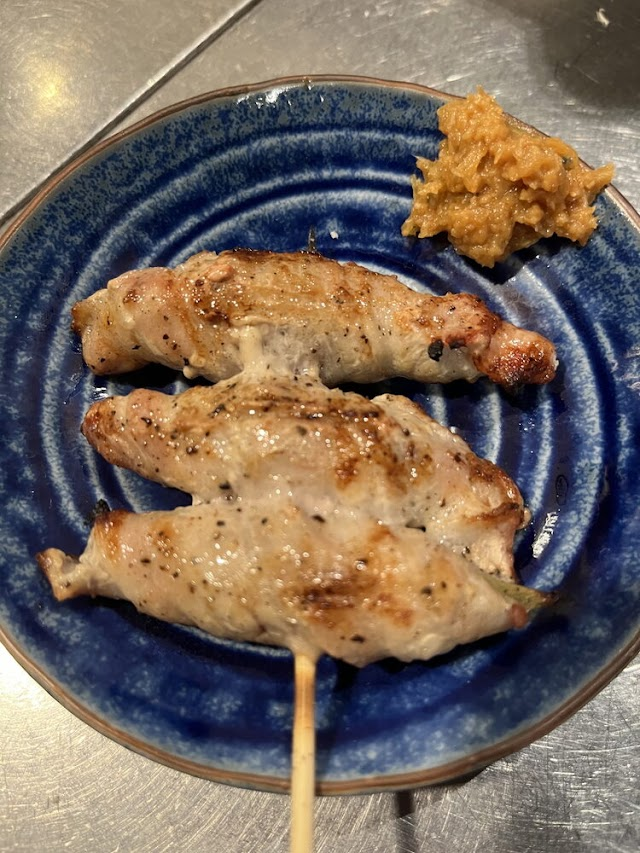
| 営業時間 | 月・火・水・木・金・土・日 17:00〜0:00 |
|---|---|
| 定休日 | なし(要最終確認) |
| 住所 | 埼玉県川口市幸町２丁目１７−１ |
| 予約 | 可 — ☎ 048-229-9888 ／ 公式サイト |
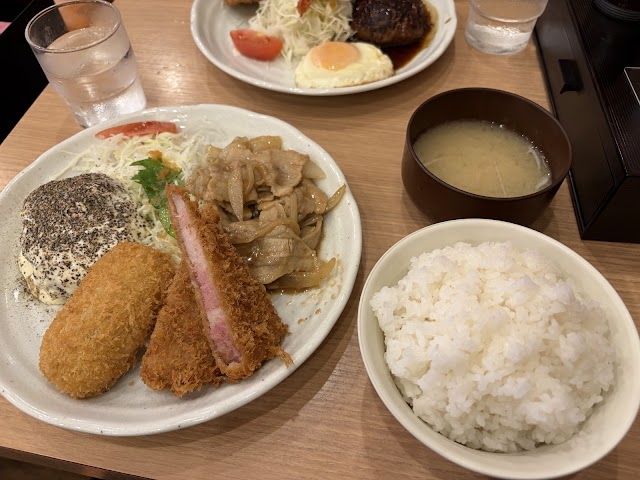
| 営業時間 | 月・火・木 11:00〜15:00 ／ 金・土・日 11:00〜15:00, 17:00〜20:00 |
|---|---|
| 定休日 | 水曜 |
| 住所 | 埼玉県川口市幸町２丁目２−１６ クレールマルシェ川口 １階 |
| 予約 | 要確認 — ☎ 048-257-1105 ／ 公式サイト |
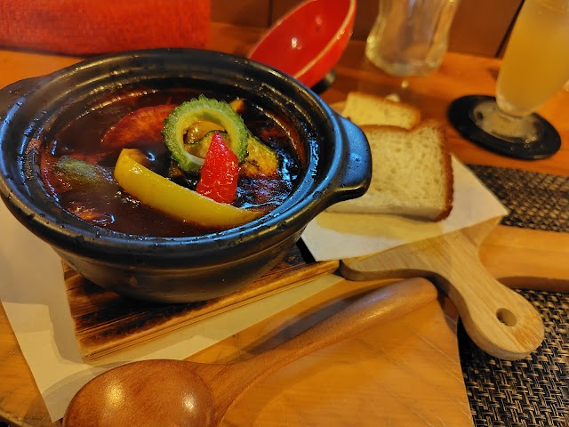
| 営業時間 | 月・火・木・金・土・日 11:30〜15:00, 18:00〜22:00 |
|---|---|
| 定休日 | 水曜 |
| 住所 | 埼玉県川口市戸塚３丁目３１−３１ |
| 予約 | 可 — ☎ 048-287-3802 ／ 公式サイト |
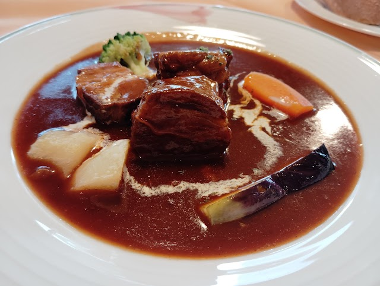
| 営業時間 | 月・火・金・土・日 11:00〜15:00, 17:00〜21:00 |
|---|---|
| 定休日 | 水・木曜 |
| 住所 | 埼玉県川口市東本郷１１２４ |
| 予約 | 可 — ☎ 048-287-6080 ／ 公式サイト |
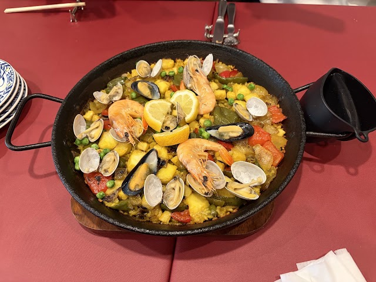
| 営業時間 | 火・水・木・金・土・日 11:30〜14:30, 17:30〜22:00 |
|---|---|
| 定休日 | 月曜 |
| 住所 | 埼玉県川口市戸塚東１丁目９−１４ |
| 予約 | 可 — ☎ 048-298-0936 ／ 公式サイト |
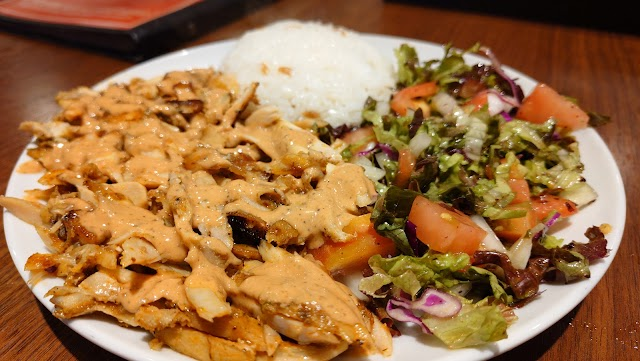
| 営業時間 | 月・火・水・木・金・土・日 10:00〜23:30 |
|---|---|
| 定休日 | なし(要最終確認) |
| 住所 | 埼玉県川口市並木２丁目１９−５ |
| 予約 | 可 — ☎ 048-291-9457 ／ 公式サイト |
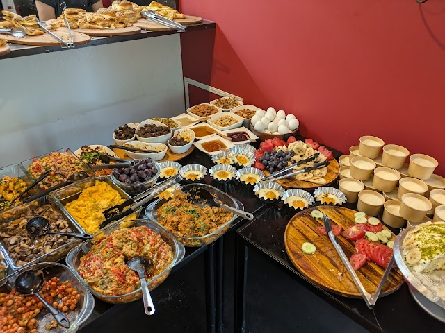
| 営業時間 | 平日6:00〜23:00／土日8:00〜23:00（日曜ビュッフェは8:30〜12:00） |
|---|---|
| 定休日 | 無休 |
| 住所 | 埼玉県川口市道合１０６−３ |
| 予約 | 可 — ☎ 048-203-3902 |
| 営業時間 | 月・火・木・金・土・日 11:00〜22:00 |
|---|---|
| 定休日 | 水曜 |
| 住所 | 埼玉県川口市西川口１丁目４−１９ 西川口ビル 1階 |
| 予約 | 要確認 — ☎ 048-257-6668 ／ 公式サイト |
| 営業時間 | 月・火・木・金 11:00〜14:00, 17:00〜21:30 ／ 土・日 11:00〜21:30 |
|---|---|
| 定休日 | 水曜 |
| 住所 | 埼玉県川口市坂下町２丁目１−１０ １階角 |
| 予約 | 要確認 — ☎ 048-278-5007 ／ 公式サイト |
| 営業時間 | 火・水・木・金・土 10:00〜17:30 |
|---|---|
| 定休日 | 月・日曜 |
| 住所 | 埼玉県川口市北園町１７−１９ |
| 予約 | 要確認 — ☎ 048-423-3407 ／ 公式サイト |
| 営業時間 | 月・水・木・金・土・日 10:00〜20:00 |
|---|---|
| 定休日 | 火曜 |
| 住所 | 埼玉県川口市幸町２丁目４−１７ |
| 予約 | 要確認 — ☎ 048-256-3847 ／ 公式サイト |
| 営業時間 | 月・火・金・土・日 10:00〜17:00 |
|---|---|
| 定休日 | 水・木曜 |
| 住所 | 埼玉県川口市東川口３丁目１−５ |
| 予約 | 要確認 — ☎ 048-297-1360 |
| 営業時間 | 月・木・金・土・日 11:00〜15:30, 18:00〜20:00 |
|---|---|
| 定休日 | 火・水曜 |
| 住所 | 埼玉県川口市本町３丁目１０−３ |
| 予約 | 要確認 — ☎ 080-5544-2828 |
| 営業時間 | 月・火・木・金・土・日 11:30〜22:00 |
|---|---|
| 定休日 | 水曜 |
| 住所 | 埼玉県川口市西川口１丁目１９−１９−４ |
| 予約 | 要確認 — ☎ 048-253-3101 |
| 営業時間 | 月・水・木・金・土・日 10:00〜21:00 |
|---|---|
| 定休日 | 火曜 |
| 住所 | 埼玉県川口市栄町３丁目７−１ 1階 |
| 予約 | 要確認 — ☎ 0120-663-661 ／ 公式サイト |
| 営業時間 | 月・火・木・金・土・日 9:15〜18:30 |
|---|---|
| 定休日 | 水曜 |
| 住所 | 埼玉県川口市朝日１丁目２４−７ |
| 予約 | 要確認 — ☎ 048-223-8986 ／ 公式サイト |
| 営業時間 | 月・水・木・金・土・日 9:00〜19:00 |
|---|---|
| 定休日 | 火曜 |
| 住所 | 埼玉県川口市桜町２丁目５−１６ |
| 予約 | 要確認 — ☎ 048-282-1425 ／ 公式サイト |
| 営業時間 | 月・水・木・金・土・日 9:30〜18:00 |
|---|---|
| 定休日 | 火曜 |
| 住所 | 埼玉県川口市辻７６７−８ |
| 予約 | 要確認 — ☎ 048-283-0298 ／ 公式サイト |
| 営業時間 | 月・火・水・木・金・土 9:00〜18:00 |
|---|---|
| 定休日 | 日曜 |
| 住所 | 埼玉県川口市栄町１丁目１８−９ |
| 予約 | 要確認 — ☎ 048-253-2614 |
| 営業時間 | 火・水・木・金 11:00〜18:00 ／ 土 11:30〜18:00 |
|---|---|
| 定休日 | 月・日曜 |
| 住所 | 埼玉県川口市北園町４７−２０ シミズビル |
| 予約 | 要確認 — ☎ 048-261-1600 ／ 公式サイト |
| 営業時間 | 月・火・木・金・土・日 9:00〜18:00 |
|---|---|
| 定休日 | 水曜 |
| 住所 | 埼玉県川口市西川口６丁目８−３３ 村田ビル 1F |
| 予約 | 可 — ☎ 048-252-1739 ／ 公式サイト |
本ガイドは個人利用目的で作成。掲載情報は2026年8月時点の調査に基づく。写真出典: Google Maps投稿写真(©各投稿者/Google)。